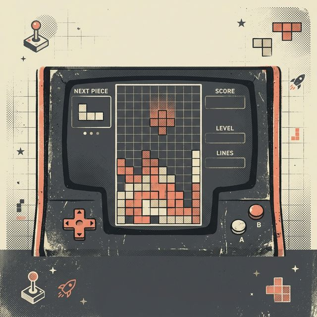
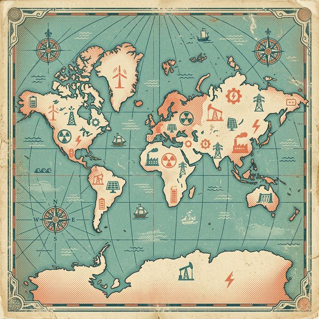
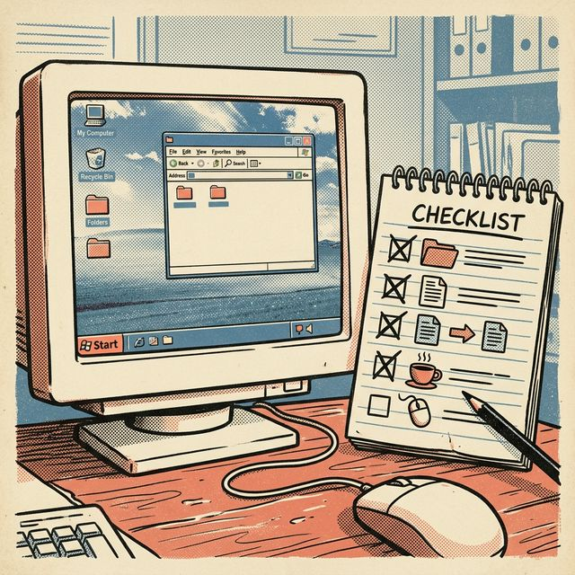

Welcome to the portfolio of xjustice. I explore the intersection of technology and design through games, interactive maps, and specialized data tools.

A high-fidelity recreation of the classic Tetris game, built using the Godot Engine 4. This version features smooth animations, responsive controls, and a minimalist space-themed UI.

An interactive data visualization project tracking global energy consumption and production trends. Built to provide insights into renewable energy adoption and resource management worldwide.

Compliance management redefined. This application provides a structured checklist for ISO 17020 requirements, wrapped in a nostalgic Windows XP user interface.